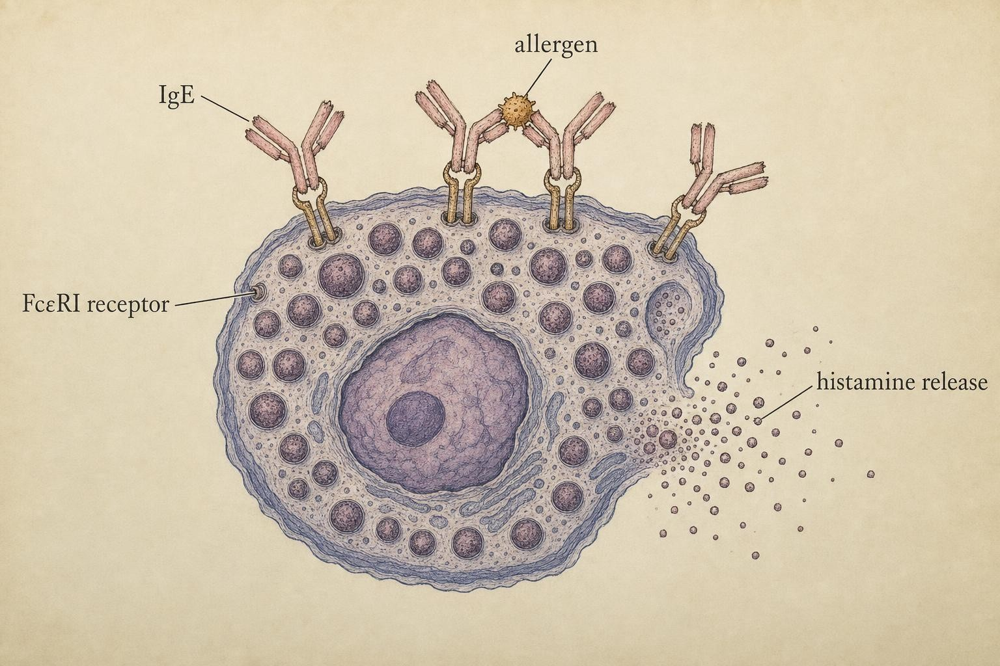
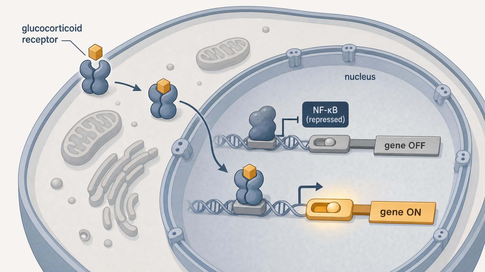

When Defense Turns: Conditions, Cortisol Control, and Thymosin Alpha-1
Four ways a balanced system fails , and two ways signaling can be nudged back toward homeostasis.
A young woman notices her fingers ache and stiffen every morning, worst in the first hour after waking, easing as the day warms up. A retired machinist finds that a small cut on his shin refuses to heal, and that he keeps catching the same chest infections he used to shrug off. A teenager's lips swell and her throat tightens minutes after a bite of a friend's peanut-butter sandwich. And a middle-aged man with a widening waistline learns that his blood carries a faint, persistent chemical hum of inflammation even though nothing, anywhere, is visibly inflamed.
Four people, four stories, one machine. Each of these is the same immune and inflammatory system you have studied for eight chapters , the recognition, the memory, the fire, the resolution , but running wrong in a specific, describable way. This chapter is about reading those patterns: not diagnosing them, never diagnosing them, but understanding the mechanisms well enough to recognize when something has crossed the line from normal defense into disorder, and to know that the correct next move is always the same one , a trained clinician.
The system, and its four ways of breaking
Everything you have learned so far describes a system engineered for balance. It must respond ferociously to genuine threats and then stand down completely once the threat is cleared. It must distinguish self from non-self, and among non-self it must distinguish the dangerous from the harmless. It must remember past encounters without becoming trigger-happy. Every one of these balancing acts is a place where the machine can slip.
Why is this balance so hard to strike in the first place? Because the two failure directions are not symmetric risks sitting at opposite ends of a dial that can simply be set to a safe middle value. A system tuned to minimize the chance of missing a genuine pathogen will necessarily generate more false alarms against self and against harmless antigens. A system tuned to minimize false alarms will necessarily miss more real threats. The immune system's evolved settings represent a compromise that works well enough, on average, across a population and a lifetime, but a compromise that works on average will still fail in some individuals, some of the time. That statistical inevitability, not a design flaw unique to any one person, is the deeper reason autoimmune disease, allergy, chronic inflammation, and immunodeficiency exist at all as recognizable categories rather than as rare curiosities.
It helps to name the failure modes cleanly, because each corresponds to a specific balance you already understand. We can arrange them along two axes: is the system doing too much or too little? and is the target appropriate or inappropriate?
- Autoimmunity , too much response, against the wrong target: the system attacks self. This is a failure of the self-recognition and tolerance we built in Chapter 2.
- Allergy and atopy , too much response, against a harmless target: the system mounts a full defensive campaign against pollen, peanut, or cat dander. A failure of threat-appraisal.
- Chronic low-grade inflammation , the right idea, but it never stops: the smoldering, unresolved fire of Chapter 4, now shown to feed disease over years.
- Immunodeficiency , too little response: some part of the machine is missing or broken, and genuine threats get through.
These are not mutually exclusive , a person can carry more than one, and some feed each other (immunodeficiency, paradoxically, often coexists with autoimmunity, because a system that mis-builds its parts tends to mis-regulate them too). But learning them as four clear archetypes gives you a mental filing system, and that system is exactly what the first widget will let you practice.
Autoimmunity: the failure of tolerance
Recall from Chapter 2 that the immune system faces an almost impossible design problem. To recognize any conceivable pathogen, it generates lymphocyte receptors more or less at random, producing billions of different specificities. But randomness guarantees that some of those receptors will, by chance, bind the body's own proteins. If those autoreactive lymphocytes were allowed to mature and act, the system would attack its owner. So the body invests enormously in immunological tolerance , the set of mechanisms that identify and neutralize self-reactive cells.
Tolerance operates in two tiers. Central tolerance happens in the primary lymphoid organs , the thymus for T cells, the bone marrow for B cells , where developing lymphocytes are tested against self-antigens and deleted or edited if they bind too strongly. (Hold on to the thymus here; it returns when we discuss thymosin.) Peripheral tolerance is the backup: out in the tissues, regulatory T cells, anergy-inducing signals, and checkpoint molecules restrain any self-reactive cells that slipped through. Autoimmunity is, at its core, the breakdown of one or both tiers , what Yasmeen et al. (2024) describe as the "aberrant activation of autoreactive lymphocytes" following "disruption of central and peripheral immunological tolerance."
Why tolerance breaks
No single cause explains autoimmunity. The current consensus, and the organizing theme of the Yasmeen review, is synergy: genetic predisposition, environmental exposure, and immunoregulatory disturbance combine, and no one factor alone is usually sufficient.
- Genetic predisposition. Certain HLA (human leukocyte antigen) variants , the very molecules that present antigen to T cells , are strongly associated with particular autoimmune diseases, because which self-peptides get displayed depends on your HLA type. Other risk genes tune the thresholds of lymphocyte activation. For example, certain HLA-DRB1 variants are strongly linked to rheumatoid arthritis risk, while other HLA variants associate instead with type 1 diabetes or lupus, illustrating how the same class of molecule produces very different disease associations depending on exactly which self-peptides it ends up displaying.
- Environmental triggers. Infections can spark autoimmunity through molecular mimicry , a microbial protein resembles a self-protein closely enough that the anti-microbial response cross-reacts with the host. Smoking, certain drugs, and even the gut microbiome's composition contribute. A commonly cited example is the relationship between certain streptococcal infections and rheumatic fever, in which antibodies raised against a bacterial protein cross-react with proteins in heart valve tissue, a textbook illustration of molecular mimicry in action.
- Immunoregulatory disturbance. When regulatory T cells falter or cytokine networks tilt toward inflammation, the peripheral brakes fail.
Once tolerance breaks, the mechanism becomes self-sustaining. Autoreactive cells damage tissue; damaged tissue releases more self-antigen; more self-antigen recruits more autoreactive cells. The memory you learned about in Chapter 2 now works against the patient, encoding the self-attack for the long term. This is why most autoimmune conditions are chronic and relapsing rather than acute and self-limiting.
Four faces of autoimmunity: examples worth knowing
The abstract mechanism of tolerance breakdown becomes far easier to hold onto once it is anchored to a few concrete, well-characterized conditions. Each of the following illustrates the same underlying process, autoreactive lymphocytes escaping central or peripheral control, but the identity of the target tissue determines everything about how the disease looks, feels, and progresses.
- Rheumatoid arthritis (RA) targets the synovium, the thin membrane that lines the capsule of a joint. Autoreactive T cells, B cells, and characteristic autoantibodies such as anti-citrullinated protein antibodies (ACPAs) and rheumatoid factor drive chronic inflammation of this lining. Left unchecked, the inflamed synovium thickens into an abnormal, locally invasive tissue called pannus, which erodes cartilage and the underlying bone. The pro-inflammatory cytokines tumor necrosis factor (TNF) and interleukin-6 (IL-6) are central drivers of this process, which is exactly why the cytokine-targeted biologic therapies mentioned above (drugs that neutralize TNF or block the IL-6 receptor) occupy such a prominent place in modern rheumatology.
- Hashimoto thyroiditis is the most common cause of an underactive thyroid gland in regions with adequate dietary iodine. Autoantibodies against thyroid peroxidase (TPO), an enzyme the thyroid needs to make its hormones, and against thyroglobulin, together with a steady lymphocytic infiltration of the gland, gradually destroy the thyroid's hormone-producing follicular cells. Because the thyroid has substantial functional reserve, this destruction can proceed quietly for years before hormone output finally falls low enough to produce the fatigue, weight gain, and cold intolerance of clinical hypothyroidism.
- Type 1 diabetes mellitus results from T-cell mediated destruction, largely carried out by cytotoxic CD8-positive T cells, of the insulin-producing beta cells clustered in the pancreatic islets of Langerhans. Autoantibodies against insulin itself and against the enzyme glutamic acid decarboxylase (GAD65) are useful as diagnostic and predictive markers, but it is T cells, not antibodies, that do the actual killing, a useful reminder that antibodies are not always the main effector arm of an autoimmune process. A large majority of beta-cell mass is typically lost before insulin deficiency becomes symptomatic, meaning the autoimmune attack has usually been under way for a long stretch before diagnosis.
- Systemic lupus erythematosus (SLE), unlike the three organ-focused examples above, is systemic from the start. Tolerance breaks down against nuclear antigens, the DNA, RNA-binding proteins, and associated complexes that are normally kept out of extracellular view. These materials become exposed during ordinary cell turnover, and when the resulting debris is not cleared efficiently (itself sometimes a consequence of a complement deficiency, tying back to the immunodeficiency material later in this chapter), it lingers long enough for autoantibodies to bind it. The resulting immune complexes deposit widely, in skin, joints, kidneys, and blood vessels, activating complement and provoking inflammation wherever they lodge. This is why lupus can present with an unusually broad range of signs, from a characteristic facial rash across the cheeks and nose to joint pain, kidney inflammation, and neurological symptoms, all in the same person.
Notice the split running through these four examples. RA, Hashimoto thyroiditis, and type 1 diabetes are largely organ-focused, even though their downstream effects (fatigue, systemic cytokine release) can be felt body-wide. Lupus is systemic from the outset, because its target, nuclear material, exists inside essentially every cell. That distinction between organ-specific and systemic autoimmunity is itself a useful axis for reading the pattern of a case, alongside the meta-patterns below.
Recognizable patterns , not a diagnosis
Autoimmune conditions are famously varied because the target determines the symptom: attack the joints and you get inflammatory arthritis; attack the insulin-producing beta cells and you get type 1 diabetes; attack the thyroid and you get thyroid dysfunction. But certain meta-patterns recur often enough to be worth recognizing:
- Symptoms that are symmetric (both wrists, both knees) rather than localized to one injured site.
- Morning stiffness that improves with movement , the opposite of mechanical wear-and-tear, which worsens with use.
- Relapsing-remitting courses , flares and remissions rather than steady progression.
- Constitutional signs , low-grade fever, fatigue, unexplained weight change , reflecting systemic cytokine activity.
- A **family history** of autoimmune conditions, reflecting the genetic layer.
Notice the woman in our opening vignette: symmetric finger stiffness, worst in the morning, easing with use. That pattern is consistent with an autoimmune process , and that is exactly as far as your reasoning should go. It is a reason to see a rheumatologist, not a diagnosis you can make. The cytokine-targeted therapies that Yasmeen et al. survey , biologics that neutralize specific inflammatory signals like TNF or IL-6 , exist precisely because these conditions require sophisticated, monitored intervention that no pattern-recognition exercise can substitute for.
Chronic low-grade inflammation: the fire that never goes out
In Chapter 4 you learned that acute inflammation is not damage , it is the coordinated response to damage, and its resolution is as actively programmed as its onset. Specialized pro-resolving mediators actively switch the fire off; macrophages shift phenotype and clear debris; the tissue returns to baseline. When that off-switch fails, or when the triggering signal simply never goes away, you get the fourth vignette's invisible chemical hum: chronic low-grade inflammation (CLGI).
Cifuentes et al. (2025) define CLGI precisely as a state in which "persistence of harmful triggers or deficient resolution evolves into sustained inflammatory signaling." The two clauses matter equally. Inflammation can become chronic because the trigger persists (visceral fat tissue, for instance, continuously releases inflammatory signals) or because resolution machinery is deficient (the fire would go out, but the extinguisher is broken). Often both operate together.
The molecular fuel
What keeps CLGI smoldering? The review highlights several interacting triggers you should be able to name:
- Oxidative stress , an excess of reactive oxygen species that damages molecules and activates inflammatory transcription factors.
- Mitochondrial dysfunction , failing mitochondria leak molecules that the innate immune system reads as danger signals.
- Metabolism-associated molecular patterns (MAMPs) , a conceptual cousin of the PAMPs and DAMPs from Chapter 3. Here, metabolic byproducts of overnutrition (excess free fatty acids, certain lipids, uric acid crystals) are sensed by the same pattern-recognition receptors that evolved to detect pathogens and injury. The body cannot tell the difference between a microbial threat and a metabolic one , it fires the same alarm. Uric acid crystals are a particularly well-studied example: when they accumulate in a joint, they activate an intracellular sensing complex called the inflammasome, triggering release of the potent inflammatory cytokine interleukin-1 beta (IL-1β) and producing the intensely painful acute inflammation characteristic of gout, a vivid illustration of a metabolic byproduct triggering a genuinely infection-grade alarm.
The crucial insight from Cifuentes and colleagues is that CLGI is a shared upstream mechanism , a common root beneath conditions we usually think of as unrelated. Obesity, cardiovascular disease, several digestive diseases, and cancer all share CLGI as a contributing pathway. This is why the "smoldering fire" is more than a metaphor: sustained low-grade inflammatory signaling remodels tissues, promotes insulin resistance, destabilizes arterial plaques, and creates a microenvironment permissive to tumor growth, over timescales of years to decades.
Where the smolder shows up in the body
It helps to trace the shared mechanism into a few specific tissues, because the same signaling logic recurs with only the target changed. Visceral adipose tissue (fat stored around the abdominal organs, as opposed to fat just under the skin) behaves less like inert energy storage and more like an active endocrine and immune organ. As it expands, it recruits immune cells, particularly macrophages that adopt an inflammatory ("M1-like") phenotype, and these macrophages secrete the same TNF and IL-6 implicated in rheumatoid arthritis above. In adipose tissue, that cytokine output interferes with insulin signaling in nearby fat, muscle, and liver cells, a central mechanism linking visceral obesity to insulin resistance.
A related process, sometimes called inflammaging, occurs with age. Cells that have stopped dividing but failed to die, known as senescent cells, accumulate in tissues over the decades and secrete a mixture of inflammatory signals collectively termed the senescence-associated secretory phenotype (SASP). This steady background secretion is one proposed contributor to the general rise in inflammatory markers seen with advancing age, independent of any single disease.
In the artery wall, chronic low-grade inflammatory activity contributes to atherosclerosis: oxidized cholesterol particles are taken up by macrophages that become engorged, cholesterol-laden "foam cells" within the vessel wall, and the ongoing inflammatory activity in and around these deposits can destabilize the fibrous cap covering a plaque, raising the risk that it will rupture and trigger a clot. And within a tumor's local environment, chronic inflammatory signaling can supply growth factors and blood-vessel-promoting (angiogenic) signals while dampening local anti-tumor immune activity, one of several ways CLGI is thought to support cancer initiation and progression rather than restrain it.
Because CLGI produces no dramatic local signs, its recognizable "signs" are indirect and systemic: the slowly widening waistline, the creeping metabolic markers, the fatigue. This is the failure mode where recognition depends most on laboratory measurement and least on symptom pattern , and therefore the one where the line to professional evaluation is sharpest. You cannot feel your own CRP.
Allergy and atopy: overreacting to the harmless
The third failure mode gets the target category wrong in the opposite direction from autoimmunity. Here the system correctly identifies something as non-self , pollen genuinely is foreign , but wrongly classifies it as dangerous. It mounts a defensive campaign against a substance that would have done no harm at all.
Vitte et al. (2022) lay out the mechanism of classic type I (IgE-mediated) hypersensitivity in two phases, and the two-phase structure is worth internalizing because it explains why a person can be exposed to an allergen once with no reaction and then react violently the next time.
Phase one: sensitization (the silent setup)
On first meaningful exposure, in a person with an atopic tendency, the immune environment tilts toward a Th2 response (the helper-T-cell program biased toward anti-parasite and barrier immunity). Th2 cytokines instruct B cells to class-switch to producing IgE antibodies specific to the allergen. Those IgE molecules then load onto the surface of mast cells and basophils by binding the high-affinity receptor FcεRI. The person now walks around "primed" , mast cells coated with allergen-specific IgE like tripwires , but feels nothing. Sensitization is clinically silent.
Phase two: elicitation (the reaction)
On re-exposure, the allergen crosslinks adjacent IgE molecules on the mast-cell surface. That crosslinking is the trigger: it causes the mast cell to degranulate, releasing preformed histamine and a cascade of newly synthesized mediators within minutes. Histamine dilates and leaks blood vessels, contracts smooth muscle, and stimulates nerves , producing the itch, swelling, hives, wheeze, and, in the most severe systemic form, anaphylaxis, the rapid, life-threatening reaction the teenager in our vignette experienced.
Vitte and colleagues are careful to note that not all hypersensitivity is IgE-mediated. There are non-allergic hypersensitivity reactions that clinically mimic allergy but proceed through non-IgE and innate-triggering pathways , a distinction that matters enormously for management and, again, one that only testing can resolve. This is precisely why "I think I'm allergic to X" is a hypothesis for an allergist, not a conclusion.
The severity spectrum within type I hypersensitivity also matters for recognition. At the mild end, allergic rhinitis produces sneezing, nasal congestion, and itchy eyes, all localized to the mucosa the allergen actually touches. Food or insect-sting allergy can escalate far beyond that local pattern into anaphylaxis, a systemic reaction in which mediators released from mast cells throughout the body cause blood vessels to dilate and leak fluid broadly, dropping blood pressure, while airway tissues swell and bronchial smooth muscle constricts, threatening both circulation and breathing at once. The speed of anaphylaxis, usually minutes, and its involvement of multiple organ systems simultaneously (skin, airway, and circulation together, not just one) are exactly what separate it from a milder, localized allergic reaction, and exactly why it is treated as a medical emergency rather than something to observe and wait out.
The atopic march and the barrier
Atopy is the genetic predisposition toward IgE-mediated sensitization, and it tends to manifest as a cluster , eczema, allergic rhinitis, food allergy, and asthma , that often appears in a characteristic sequence across childhood (the "atopic march"). Vitte et al. emphasize that genetic and environmental factors converge at barrier surfaces: skin and mucosa. A defective barrier (for example, mutations affecting the skin protein filaggrin) lets allergens penetrate and encounter the immune system in a sensitizing context. This connects allergy back to Chapter 1's theme that the first and most important immune organ is the barrier itself.
The hygiene hypothesis: why allergy may be rising
One of the most influential ideas in allergy research, first proposed in the late twentieth century and refined many times since, is the hygiene hypothesis. The observation that started it was demographic: children who grow up with more older siblings, in larger households, on farms, or in close contact with animals tend to develop allergic disease less often than children raised in smaller, more sanitized households. Rates of asthma, allergic rhinitis, and food allergy climbed sharply across industrialized countries over the twentieth century, in a timeframe far too short for genetics alone to explain, pointing toward something in the changing environment.
The proposed mechanism connects directly to material earlier in this course. Early childhood is a formative period for the immune system, a time when exposure to a diverse range of microbes, commensal bacteria, and even certain parasites appears to help calibrate the balance between the Th1, Th2, and regulatory T cell programs described earlier in this chapter and in Chapter 2. Rich, varied microbial exposure in infancy is thought to promote regulatory T cell development and a balanced Th1/Th2 output. Reduced early exposure, the hypothesis proposes, leaves that calibration incomplete, biasing the developing immune system toward the Th2-skewed, IgE-prone pattern that underlies allergic disease, and toward weaker regulatory restraint generally, a theme that also resurfaces in the autoimmunity literature, since regulatory T cell insufficiency contributes to both allergy and autoimmune disease.
Two honest caveats belong here. First, the hygiene hypothesis has been refined and partly reframed over time, sometimes described as the "biodiversity hypothesis" or the "old friends hypothesis," to emphasize that it is the loss of specific, evolutionarily familiar microbial exposures (certain gut bacteria, environmental organisms, some parasites) that appears to matter, rather than cleanliness in general. Second, and importantly, none of this is an argument against hygiene practices that prevent serious infection, such as handwashing, food safety, or vaccination. The hypothesis explains a population-level pattern in immune development. It is not a basis for individual choices about infection prevention, which remain governed by ordinary, well-established public health guidance.

Type I hypersensitivity: IgE crosslinking on the mast cell triggers degranulation." data-image-idx="1" style="display:block;max-width:100%;max-height:75vh;height:auto;width:auto;margin:0 auto;cursor:pointer;">Immunodeficiency: when defense underperforms
The final failure mode is the simplest to state and the easiest to overlook: sometimes the machine is missing a part. Immunodeficiency is a state of impaired immune function in which the system cannot mount adequate defense. It comes in two broad flavors. Secondary (acquired) immunodeficiency results from an external cause , a virus that destroys immune cells, malnutrition, certain drugs, or cancer of the immune system. Primary immunodeficiency (PID) is intrinsic: a genetic defect in the immune machinery itself.
Secondary immunodeficiency is worth pausing on, because its mechanisms connect directly to material elsewhere in this chapter. Certain viral infections cause it directly: the human immunodeficiency virus (HIV), for instance, uses the CD4 molecule, the very receptor that defines helper T cells, as its entry point into those cells, and progressively depletes the helper T cell population that coordinates both antibody responses and cytotoxic T cell activity. Immunosuppressive medications, prescribed deliberately to calm an overactive immune system after organ transplantation or during severe autoimmune disease (including the glucocorticoids discussed later in this chapter), produce a foreseeable and monitored trade-off: the same dampening that protects a transplanted organ or quiets a flare also blunts defense against ordinary pathogens. Malnutrition, particularly protein-energy malnutrition, impairs lymphocyte proliferation and thymic function, one reason infection is so often the proximate cause of death in severe malnutrition. And surgical removal of the spleen (splenectomy), performed for trauma or certain blood disorders, removes an organ that efficiently filters the blood for antibody-coated (opsonized) bacteria, leaving a specific, lifelong vulnerability to encapsulated organisms.
Folds and Schmitz (2003), in a foundational review, organize the primary immunodeficiencies by which component is broken , and their catalog is essentially a tour of everything you have learned, seen from the perspective of absence:
- Severe combined immunodeficiencies (SCID) , defects that cripple both T-cell and B-cell (adaptive) arms. Without functional adaptive immunity, infants suffer overwhelming infections from organisms a healthy immune system dispatches easily.
- Antibody deficiencies , the B-cell/antibody arm fails while cellular immunity is relatively intact. These patients struggle particularly with encapsulated bacteria that antibodies are specialized to opsonize.
- Phagocyte defects , the innate cells that engulf and kill microbes (Chapter 3) cannot do their job, leading to recurrent skin and deep-tissue infections and poor wound healing.
- Complement deficiencies , the complement cascade (the molecular demolition and tagging system) is incomplete, raising susceptibility to specific infections and, notably, to autoimmunity.
A profound point from the Folds and Schmitz review is that PID research illuminates basic immunology. Each natural "knockout" , a person born without a particular molecule , reveals what that molecule normally does. Much of what we know about how the healthy system works, we learned by studying where it was broken. Note too their observation that immunodeficiency and autoimmunity are linked: complement and other regulatory defects can produce both failure modes in the same person, because the same machinery that clears pathogens also helps clear self-debris and enforce tolerance. A well known concrete illustration is deficiency of the early complement component C1q: because complement normally helps clear apoptotic cell debris efficiently, its absence leaves that debris lingering in tissues, available for autoantibody binding in much the same way described for lupus above, and C1q deficiency is in fact one of the strongest known genetic risk factors for a lupus-like disease. The same missing molecule that should have helped fight infection also, by a different route, removes a brake on autoimmunity.
Recognizable patterns
The recognizable signature of immunodeficiency is infection that is unusual in one of four ways, sometimes summarized as too many, too severe, too stubborn, or too strange:
- Frequency , recurrent infections beyond what's expected for age and exposure.
- Severity , ordinary infections that become dangerous.
- Persistence , infections that won't clear or wounds that won't heal (the machinist's non-healing shin, his repeated chest infections).
- Unusual organisms , infection by microbes that rarely trouble healthy people (opportunists).
Once again: recognizing this pattern is a prompt to seek immunological evaluation, not a self-diagnosis. Distinguishing a run of bad luck from a genuine deficiency requires laboratory workup that no checklist can replace.
This is also why primary immunodeficiency is so often diagnosed late, sometimes not until adulthood. A condition like common variable immunodeficiency (CVID), one of the more frequently diagnosed antibody deficiencies, can masquerade for years as simply being "someone who catches everything," because each individual infection looks ordinary in isolation. It is the accumulated pattern across years, not any single infection, that eventually prompts the laboratory testing, including measuring immunoglobulin levels, that reveals the underlying deficiency.
The line we will not cross: recognition vs diagnosis
Every failure mode above came with the same refrain, and it is time to make the principle explicit rather than repeated. There is a categorical difference between recognizing a pattern and making a diagnosis, and understanding immunology deeply makes the temptation to blur that line stronger, not weaker , which is exactly why we must guard it.
Recognition is pattern awareness: "symmetric morning stiffness that eases with use is the kind of thing autoimmune arthritis can cause." Diagnosis is a formal, accountable determination that a specific person has a specific condition, made by someone with the training, testing, and legal responsibility to be right. The gap between the two is filled with things a reader cannot do: order and interpret serologies, imaging, and functional assays; weigh the base rates of competing explanations; examine the patient; and carry the consequences of being wrong.
Why does this matter so much in immunology specifically? Three reasons. First, the failure modes mimic each other and everything else , fatigue and low fever appear in autoimmunity, CLGI, infection, and a dozen benign states. Second, the conditions overlap: a person can have immunodeficiency and autoimmunity at once, as Folds and Schmitz note. Third, the stakes of self-management are severe , an untreated autoimmune process damages tissue irreversibly, and, as we are about to see, the drugs that modulate immunity are powerful enough to cause serious harm when used without oversight. The correct output of everything in this chapter is a better-informed conversation with a clinician, not a private conclusion.
Consider how much apparatus stands between a recognizable pattern and an actual diagnosis in, say, suspected lupus. A clinician working through that possibility does not stop at "some joint pain and a rash." They take a structured history, examine the pattern and distribution of every finding, order specific autoantibody panels (antinuclear antibody testing and, if positive, more specific follow-up tests), check complement levels and kidney function, and weigh all of it against dozens of other conditions that can produce overlapping signs, from other autoimmune diseases to infections to medication reactions. Each of those steps requires equipment, reference ranges, and interpretive judgment that live outside a textbook chapter. What this course can responsibly give you is the first step only: an educated sense of when a pattern is worth raising with a clinician at all, described honestly enough that you know its limits.
Modulating the signal I: glucocorticoid control of inflammation
We turn now from what breaks to how signaling can be nudged , described, as promised throughout this course, mechanistically and descriptively only. No protocols, no doses, no cycles, no sourcing. The goal is to understand how these tools act on the pathways you already know, so that when you encounter them in the world you can reason about them rather than merely react.
In Chapter 6 you met cortisol, the body's endogenous glucocorticoid, released by the adrenal cortex under HPA-axis control. Cortisol is the physiological off-signal for inflammation , one of the reasons the stress axis and the immune system are so tightly coupled. Synthetic glucocorticoid drugs (the "-sone" and "-solone" family) are chemical relatives of cortisol, and they work through the very same receptor. Understanding that receptor explains both their remarkable power and their steep costs.
How the glucocorticoid receptor rewrites inflammation
Escoter-Torres et al. (2019) title their review "Fighting the Fire," and the mechanism they describe is elegant. The glucocorticoid receptor (GR) is a ligand-activated transcription factor: in the resting state it sits in the cytoplasm, but when a glucocorticoid binds it, the receptor changes shape, moves into the nucleus, and directly alters which genes are transcribed. Crucially, the GR works in both directions:
- Transrepression , the GR interferes with the master pro-inflammatory transcription factors NF-κB and AP-1 (the same NF-κB you met as the central switch of innate inflammatory signaling). By repressing them, it shuts down the transcription of a broad swath of inflammatory genes , cytokines, chemokines, adhesion molecules , all at once.
- Transactivation , the GR simultaneously turns on a set of anti-inflammatory and metabolic genes.
Liberman et al. (2018) extend the picture across cell types, showing that the GR acts on macrophages, dendritic cells, neutrophils, and T cells , and even microglia in the brain. Its primary anti-inflammatory actions include suppressing cytokine output, enhancing the phagocytic clearance of debris, and inducing apoptosis (programmed death) in lymphocytes, which is part of how glucocorticoids shrink inflammatory infiltrates. This is why glucocorticoids are among the most broadly effective anti-inflammatory agents known: they act at the transcriptional root of the fire, in nearly every relevant cell, rather than blocking a single downstream mediator.
Why clinicians reach for glucocorticoids
The breadth of the GR's transcriptional reach explains why one drug class shows up across such a strikingly wide range of medical contexts. Because glucocorticoids act on the shared transcriptional machinery of inflammation rather than on any single disease-specific pathway, clinicians use them, under careful supervision and for reasons specific to each case, in settings that include acute flares of autoimmune disease such as rheumatoid arthritis and lupus, severe allergic reactions and anaphylaxis (as an adjunct alongside epinephrine, the first-line treatment), asthma exacerbations and other inflammatory airway disease, flares of inflammatory bowel disease, prevention and treatment of transplant organ rejection by restraining the recipient's T cells from attacking the graft, some cancers as part of a broader treatment regimen, and severe systemic inflammatory states more generally. This list is offered purely to make sense of the mechanism, to show why breadth of GR action translates into breadth of clinical application, not as guidance about when or how any of these should be used. That determination, in every case, belongs to a prescriber weighing the specific benefit and risk for a specific patient.
Why that power carries a cost
The same breadth that makes glucocorticoids powerful makes them dangerous. Because the GR is expressed in nearly every cell in the body and regulates hundreds of genes far beyond immunity , genes governing glucose metabolism, bone turnover, muscle protein, mood, and more , broad GR activation produces broad side effects. Escoter-Torres and colleagues catalog the familiar adverse-effect profile of sustained glucocorticoid exposure: insulin resistance, osteoporosis (bone loss), and muscle atrophy, among others. The system has no way to confine the drug's action to inflammation alone.
Liberman et al. add a subtler and important complication: the GR's effects are not uniformly anti-inflammatory. Under certain conditions, glucocorticoid signaling can be paradoxically pro-inflammatory. Their conclusion frames the whole therapeutic challenge: the goal is to fine-tune GR activity , to reduce pathological signaling while restoring homeostasis , rather than to simply crank it in one direction. This is the mechanistic reason glucocorticoid therapy is a matter for careful clinical management, weighing benefit against a real and cumulative cost. Understanding the mechanism is the point; using these agents is a decision that belongs to a clinician and patient together.
The catalog of risks runs deeper than the metabolic, bone, and muscle effects already named, and each additional item traces back to the same root cause: the GR is active almost everywhere, so a drug that activates it cannot confine its effect to the joint, lung, or gut being treated. Because the body's own cortisol production is governed by negative feedback through the hypothalamic-pituitary-adrenal (HPA) axis introduced in Chapter 6, sustained exogenous glucocorticoid exposure signals the brain to reduce its own corticotropin-releasing hormone (CRH) and adrenocorticotropic hormone (ACTH) output, which in turn lets the adrenal cortex's own cortisol-producing capacity wind down. This is precisely why prescribers do not simply stop these medications abruptly after prolonged use: a poorly supervised stop can leave the body without enough of either the drug or its own cortisol, producing adrenal insufficiency. Beyond the HPA axis, sustained glucocorticoid exposure raises the risk of infection (the same dampening that quiets an autoimmune flare also blunts defense against real pathogens, echoing the secondary immunodeficiency mechanism described earlier), can raise pressure inside the eye and accelerate cataract formation, is associated with mood and sleep disturbance, thins the skin and slows wound healing, can suppress growth in children on prolonged systemic therapy, and can contribute to fluid retention and elevated blood pressure. None of these effects means the drugs are used carelessly. It means their use is one of the more closely monitored areas of medicine, with dose, duration, and tapering schedules individualized and supervised specifically because the underlying receptor has no off switch for tissues outside the one being treated.

The glucocorticoid receptor as a two-way transcriptional switch , repressing inflammatory genes while activating others." data-image-idx="2" style="display:block;max-width:100%;max-height:75vh;height:auto;width:auto;margin:0 auto;cursor:pointer;">Modulating the signal II: thymosin alpha-1 as a case study in honest evidence
If glucocorticoids are a broad dampener, our final subject is something more targeted , and more uncertain. Thymosin alpha-1 (TA-1, or Tα1) is a small peptide, 28 amino acids long, originally isolated from the thymus , the organ where, as you learned in the autoimmunity section, T cells undergo central tolerance and maturation. That origin is the whole conceptual hook: TA-1 is studied not as a suppressor but as an immune modulator, a molecule thought to help tune immune responses, particularly T-cell maturation and function.
We treat TA-1 deliberately as a case study in evidence-grading, because it lets us practice something essential: describing a proposed mechanism precisely while stating honestly how strong the evidence for its clinical effects actually is. As always: mechanism and description only, no protocols, doses, cycles, or sourcing.
The proposed mechanism
Tao et al. (2023) provide the most systematic molecular account. The proposed picture is that TA-1 acts largely through Toll-like receptors (TLRs) , the same pattern-recognition receptors of innate immunity from Chapter 3. Specifically, they describe TA-1 binding TLR3, TLR4, and TLR9 to activate downstream signaling through IRF3 and NF-κB, engaging the TLR2/p38MAPK pathway, and acting via TLR7/MyD88. The net downstream effect they describe is stimulation of T-cell proliferation, differentiation, and maturation , nudging the adaptive system toward a more competent state rather than suppressing it. In this framing TA-1 sits opposite the glucocorticoids on the modulation axis: where cortisol-like drugs broadly dampen, TA-1 is proposed to selectively enhance and coordinate.
The molecule's history is itself informative. Thymosin alpha-1 was first isolated in the 1960s and 1970s from thymosin fraction 5, a partially purified extract of calf thymus tissue, during a research effort to identify the specific factors responsible for the thymus's role in T-cell development, the very process of central tolerance and maturation introduced earlier in this chapter. That the molecule came from the thymus, and appears to act on the maturation process the thymus governs, is the thread connecting its name, its proposed mechanism, and its place in this chapter.
Beyond direct effects on T cells, the proposed mechanism also implicates dendritic cells, the professional antigen-presenting cells introduced in earlier chapters that bridge innate pattern recognition and adaptive T-cell activation. Because dendritic cells themselves express Toll-like receptors, TA-1's proposed TLR-mediated action is described as promoting dendritic cell maturation and enhancing their capacity to present antigen effectively, which would amplify its effect on T-cell responses indirectly as well as directly. This dual site of action, T cells and the dendritic cells that instruct them, is part of what makes TA-1 mechanistically interesting as a case study: it is proposed to act at a coordinating hub of adaptive immunity rather than on a single cytokine or cell type.
That is a coherent, mechanism-first story, and it connects cleanly to everything you know. But a plausible mechanism is not the same as proven clinical benefit, and this is where the case study earns its keep.
Grading the evidence honestly
Two features of the literature must be held together. On one hand, the evidence base is broad. Dinetz and Lee (2024) reviewed over 30 clinical trials encompassing more than 11,000 human subjects, spanning COVID-19, autoimmune conditions, and cancer, and concluded that TA-1 emerges as a generally well-tolerated immune modulator across diverse conditions. Broad exposure with a favorable tolerability signal is genuinely meaningful.
On the other hand, breadth is not the same as depth, and the reviews are refreshingly candid about this. Tao et al. explicitly note gaps in the systematic evidence for specific viral conditions , that is, the mechanistic and preliminary clinical picture is more developed than rigorous, condition-specific proof of efficacy for many indications. Dinetz and Lee also flag regulatory-status nuances, including FDA restrictions on compounding, which means TA-1's availability and legitimacy vary by jurisdiction and context in ways a mechanism diagram does not capture.
The regulatory patchwork is worth spelling out concretely, because it is a useful lesson about reading evidence and approval status honestly. TA-1 is marketed under the brand name Zadaxin in a number of countries across Asia, Latin America, and elsewhere, approved in those jurisdictions for specific indications, most notably as an adjunct treatment for chronic hepatitis B and hepatitis C infection, and in some settings as an immune adjuvant. In the United States, by contrast, it does not hold that kind of prescription drug approval, and, as Dinetz and Lee note, has been the subject of specific FDA scrutiny regarding compounded versions sold outside the standard drug-approval pathway. During the COVID-19 pandemic, TA-1 drew renewed research attention as a potential adjunct immune modulator in severe illness, illustrating how existing modulators are often re-examined against emerging diseases, but, consistent with the evidence-grading exercise here, the trial results across these studies have been mixed and have not been sufficient to establish it as standard therapy for that or most other indications. Regulatory approval, in other words, is never a single global fact. It is specific to an indication and a jurisdiction, and "approved somewhere, for something" is a very different claim from "proven for everything" or "appropriate for a given person to seek out."
So the honest summary is layered, and you should be able to state each layer distinctly:
- Mechanism: a well-articulated, biologically plausible model centered on TLR signaling and T-cell maturation (Tao et al., 2023).
- Tolerability: supported across a large aggregate of human subjects (Dinetz & Lee, 2024).
- Condition-specific efficacy: stronger for some indications than others, with acknowledged gaps in systematic evidence , preliminary is the fair word for much of it.
- Regulatory status: nuanced and jurisdiction-dependent.
It is worth naming explicitly why this particular molecule makes such a good teaching case. TA-1 sits in a space that attracts genuine enthusiasm online and in some clinical circles, precisely because its mechanism is real and its safety signal is reassuring, which makes it easy to round "well-tolerated with a plausible mechanism" up to "proven and appropriate for me." That rounding-up error is not unique to TA-1. It is the same error that could be made about any biologically plausible molecule with an incomplete efficacy record, and the discipline of keeping the four layers separate is a transferable skill, one you can apply to the next immune-modulating molecule that attracts hype long before its evidence catches up.
This layered verdict is the intellectual habit the whole course has been building toward. "It has a mechanism" and "it works for condition X" and "it is well tolerated" and "it is appropriate for a given person to use" are four separate claims, each requiring its own evidence. Conflating them , assuming that a beautiful mechanism guarantees clinical benefit, or that broad tolerability implies proven efficacy , is one of the most common errors in reasoning about immune modulators. The responsible move, here as everywhere in this chapter, is to describe what is known, flag what is preliminary, and route any personal decision through a clinician who can weigh the specifics.
Fine-tuning glucocorticoid receptor activity is key to reducing pathological signaling while restoring homeostasis.
Paraphrasing Liberman et al. (2018) , the guiding principle of all immune modulation
Key Takeaways
- The immune system's disorders map onto four failure modes: autoimmunity (excess response to self), allergy/atopy (excess response to harmless non-self), chronic low-grade inflammation (a response that never resolves), and immunodeficiency (insufficient response).
- Autoimmunity is a breakdown of central and peripheral tolerance, arising from the synergy of genetic predisposition, environmental triggers, and immunoregulatory disturbance (Yasmeen et al., 2024).
- Chronic low-grade inflammation is driven by persistent triggers or deficient resolution , fueled by oxidative stress, mitochondrial dysfunction, and metabolism-associated molecular patterns , and is a shared upstream mechanism across obesity, cardiovascular, digestive disease, and cancer (Cifuentes et al., 2025).
- Type I allergy unfolds in two phases: silent IgE sensitization (Th2-driven, FcεRI loading on mast cells) and rapid elicitation (allergen crosslinking → degranulation → histamine) (Vitte et al., 2022).
- Immunodeficiency is recognized by infections that are too frequent, too severe, too persistent, or too unusual; primary forms map onto specific broken components (Folds & Schmitz, 2003).
- Recognizing a pattern is not diagnosing a condition. Every sign in this chapter is a prompt to seek professional evaluation , never a basis for self-diagnosis or self-treatment.
- Glucocorticoids act through the glucocorticoid receptor to repress NF-κB and AP-1 across many cell types; their breadth explains both their power and their metabolic, bone, and muscle costs (Escoter-Torres et al., 2019; Liberman et al., 2018).
- Thymosin α1 is a case study in honest evidence-grading: a plausible TLR/T-cell-maturation mechanism and broad tolerability data, but condition-specific efficacy that remains preliminary and regulatory status that is nuanced (Tao et al., 2023; Dinetz & Lee, 2024).
Having seen how the system breaks and how its signals can be nudged, the final chapter turns the lens back on the reader: how the everyday levers you actually control , sleep, movement, nutrition, stress, and the barrier surfaces themselves , shape immune balance over a lifetime, and how to reason about interventions with the same layered, evidence-first honesty we just applied to thymosin α1.
References
Cifuentes, M., Verdejo, H. E., Castro, P. F., Corvalan, A. H., Ferreccio, C., Quest, A. F. G., Kogan, M. J., & Lavandero, S. (2025). Low-grade chronic inflammation: A shared mechanism for chronic diseases. Physiology, 40. https://doi.org/10.1152/physiol.00021.2024
Dinetz, E., & Lee, E. (2024). Comprehensive review of the safety and efficacy of thymosin alpha 1 in human clinical trials. https://pubmed.ncbi.nlm.nih.gov/38308608/
Escoter-Torres, L., Caratti, G., Mechtidou, A., Tuckermann, J., Uhlenhaut, N. H., & Vettorazzi, S. (2019). Fighting the fire: Mechanisms of inflammatory gene regulation by the glucocorticoid receptor. Frontiers in Immunology, 10, 1859. https://doi.org/10.3389/fimmu.2019.01859
Folds, J. D., & Schmitz, J. L. (2003). Primary immunodeficiency diseases. Journal of Allergy and Clinical Immunology, 111(2, Suppl.), S571-S581. https://www.sciencedirect.com/science/article/abs/pii/S0091674902913485
Liberman, A. C., Budziñski, M. L., Sokn, C., Gobbini, R. P., Steininger, A., & Arzt, E. (2018). Regulatory and mechanistic actions of glucocorticoids on T and inflammatory cells. Frontiers in Endocrinology, 9, 235. https://doi.org/10.3389/fendo.2018.00235
Tao, N., Xu, X., Ying, Y., Hu, S., Sun, Q., Lv, G., & Gao, J. (2023). Thymosin α1 and its role in viral infectious diseases: The mechanism and clinical application. Molecules, 28(8), 3539. https://doi.org/10.3390/molecules28083539
Vitte, J., Vibhushan, S., Bratti, M., Montero-Hernández, J. E., & Blank, U. (2022). Allergy, anaphylaxis, and nonallergic hypersensitivity: IgE, mast cells, and beyond. Medical Principles and Practice, 31(6), 501-515. https://doi.org/10.1159/000527481
Yasmeen, F., Pirzada, R. H., Ahmad, B., Choi, B., & Choi, S. (2024). Understanding autoimmunity: Mechanisms, predisposing factors, and cytokine therapies. International Journal of Molecular Sciences, 25(14), 7666. https://doi.org/10.3390/ijms25147666